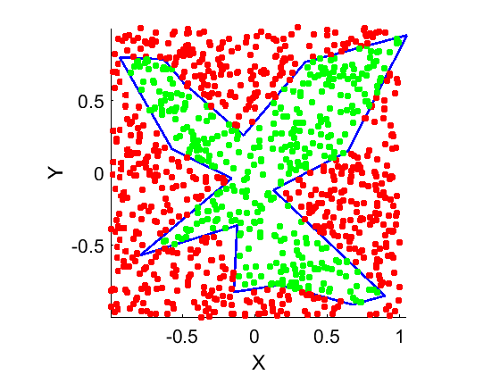

isinside2Dset
Function to check if a vertex is located inside or outside a given 2D set, boundary included (closed set).
Author & support : nicolas.douillet (at) free.fr, 2023.
Contents
Syntax
isin = isinside2Dset(V, P);
Description
isin = isinside2Dset(V, P) computes the boolean isin which is true/logical 1 in the case the vertex P belongs to the closed set V (boundary included). isin is false/logical 0 in the case vertex P belongs to the complementary set.
See also
Input arguments
[ | | ]
- V = [ Vx Vy ], real matrix double, the set, with size(V,2) = 2.
[ | | ] [ | | ]
- P = [Px Py ], real row vector or matrix double, the coordinates of the vertex / vertices to check. Size(P,2) = size(V,2).
[ | | ]Output argument
[ | ]
- isin = [logical 1 / 0], logical true (1)/false (0) scalar / column vector. The boolean result. Size(isin) = [size(P,1),1].
[ | ]Example #1 : random 2D point cloud
N = 16; V = 2*(rand(N,2)-0.5); G = mean(V,1); V = V - G; theta = atan2(V(:,2),V(:,1)); [~,i] = sort(theta); V = V(i,:); [A,B] = meshgrid(-1:0.1:1); P = cat(2,A(:),B(:)); figure line([V(:,1); V(1,1)],[V(:,2); V(1,2)],'Color',[0 0 1],'LineWidth',2), hold on; set(gcf,'Color',[0 0 0]), set(gca,'Color',[0 0 0],'XColor',[1 1 1],'YColor',[1 1 1],'FontSize',16); xlabel('X'), ylabel('Y'); isin = cell2mat(cellfun(@(c) isinside2Dset(V,c),num2cell(P,2),'un',0)); ColorSpec = cell2mat(cellfun(@(c) cat(2,~c,c,0),num2cell(isin,2),'un',0)); cellfun(@(r1,r2) plot(r1(1,1),r1(1,2),'+','Color',r2,'MarkerSize',4,'LineWidth',4),num2cell(P,2),num2cell(ColorSpec,2),'un',0); axis equal, axis tight;